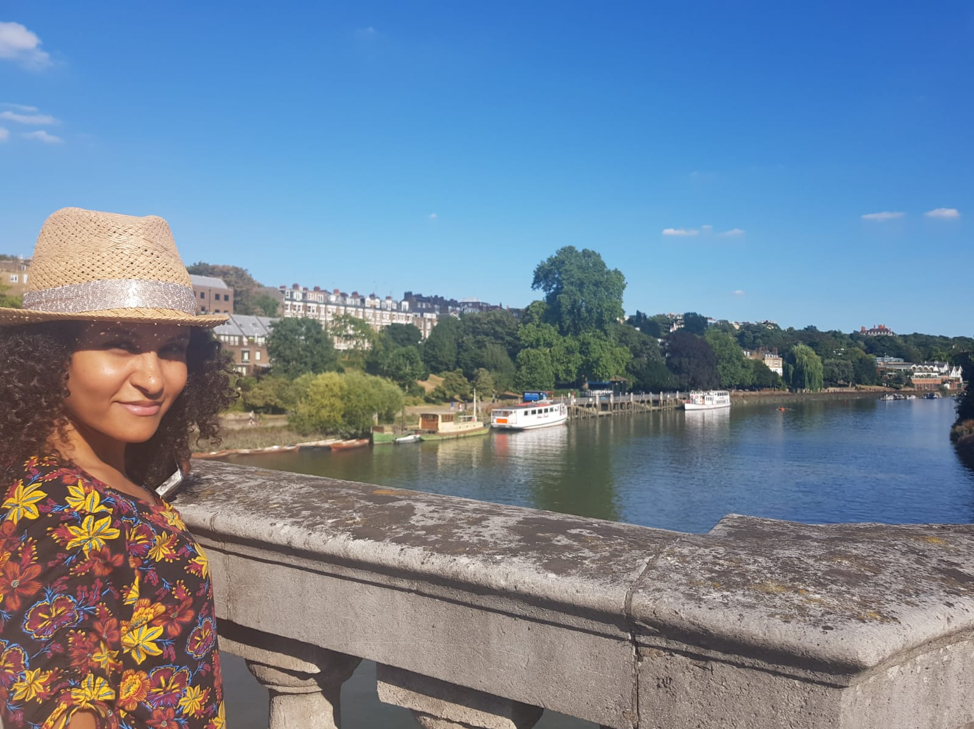

Rabab
Hello, my name is Rabab, I am from Egypt and welcome to my islands’ adventures. Before coming to Prince Edward Island, I used to be a flight attendant for 15 and a half years. I had the opportunity to visit some warm water tropical islands back then. I’m going to share my personal experience about those islands here on this website, as well as some of the photos that I managed to capture and I still have access to. Prince Edward Island is considered the very first cold water island experience to me which I’m also going to talk about. Currently, I’m doing a Master of Arts in Island Studies at the University of Prince Edward Island, and I met my classmate Henry in this course who also visited a lot of wonderful islands. Henry, as well, will share his insight into some of his amazing trips, and we are both creating the website for this purpose. Our objective is to build a website that will talk about the islands we have been to, and the concept of Islandness from our own point of view and our personal travel encounters.
Henry
Hello, my name is Rabab, I am from Egypt and welcome to my islands’ adventures. Before coming to Prince Edward Island, I used to be a flight attendant for 15 and a half years. I had the opportunity to visit some warm water tropical islands back then. I’m going to share my personal experience about those islands here on this website, as well as some of the photos that I managed to capture and I still have access to. Prince Edward Island is considered the very first cold water island experience to me which I’m also going to talk about. Currently, I’m doing a Master of Arts in Island Studies at the University of Prince Edward Island, and I met my classmate Henry in this course who also visited a lot of wonderful islands. Henry, as well, will share his insight into some of his amazing trips, and we are both creating the website for this purpose. Our objective is to build a website that will talk about the islands we have been to, and the concept of Islandness from our own point of view and our personal travel encounters.